Galería de trabajos
Imágenes reales de nuestros servicios: arado, movimiento de tierra, reparación de caminos, paisajismo y riego tecnificado en Melipilla.
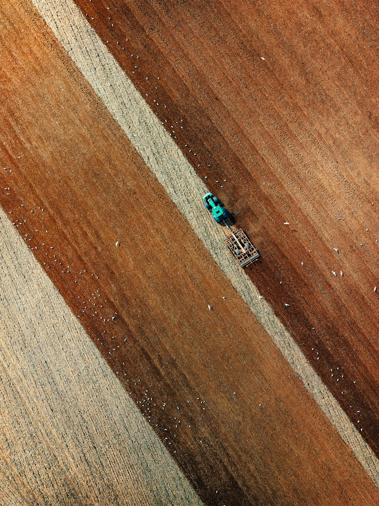
Trabajo en terreno
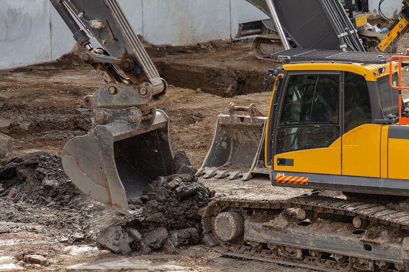
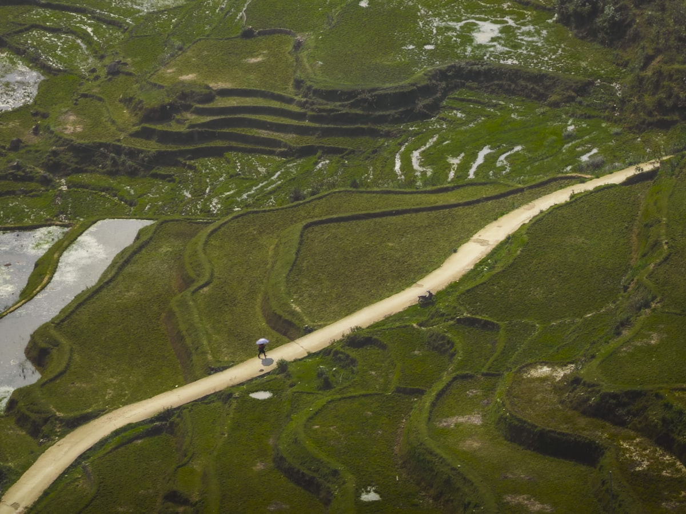
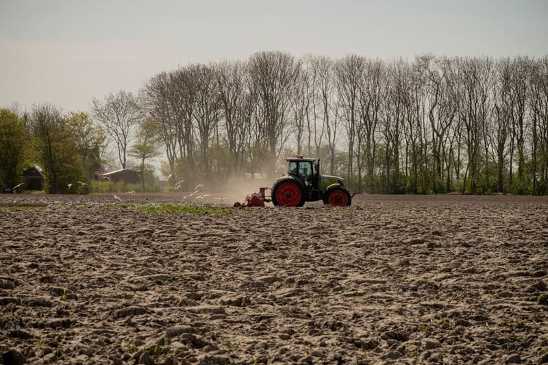
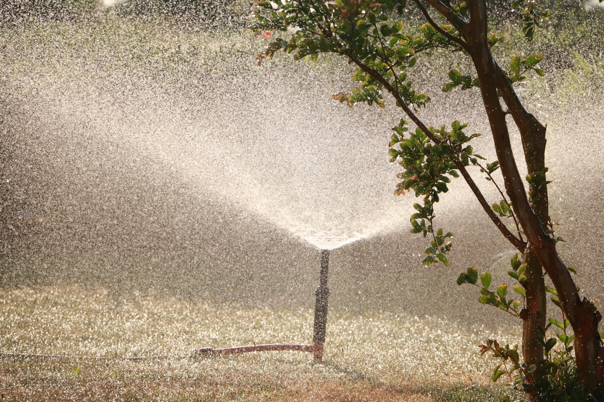
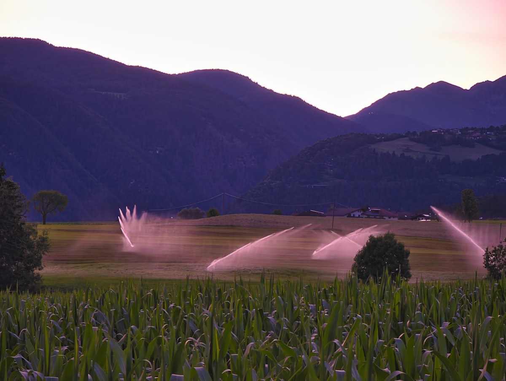
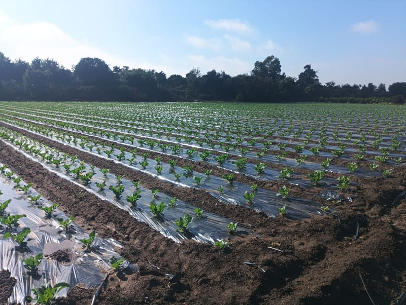
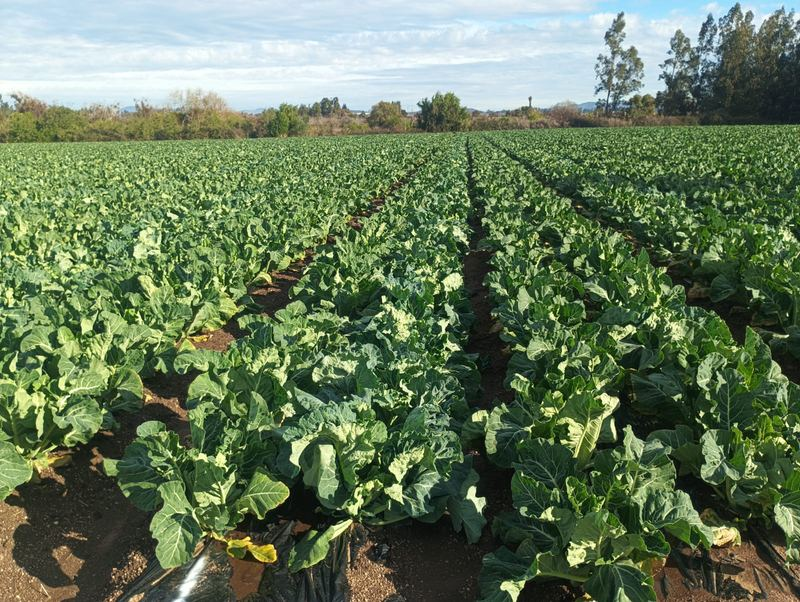
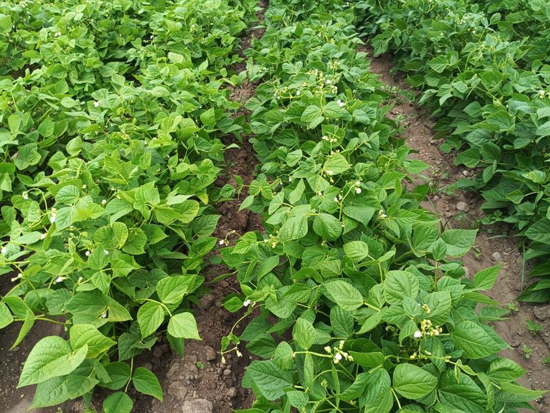
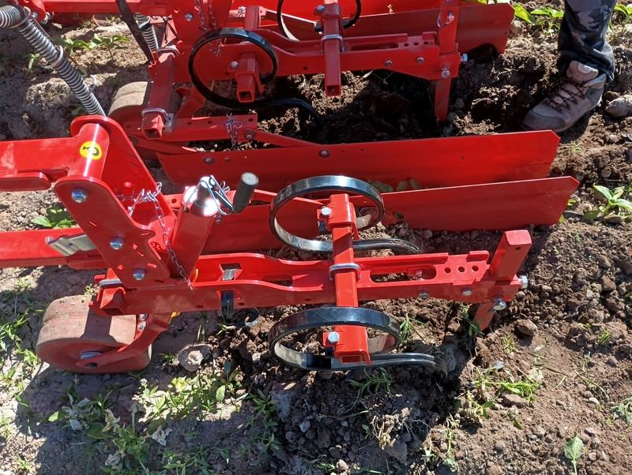
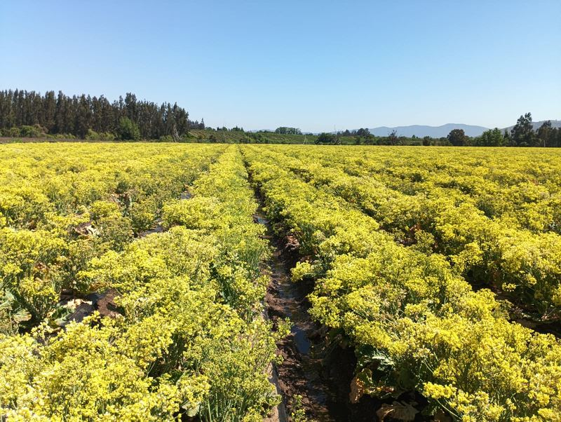
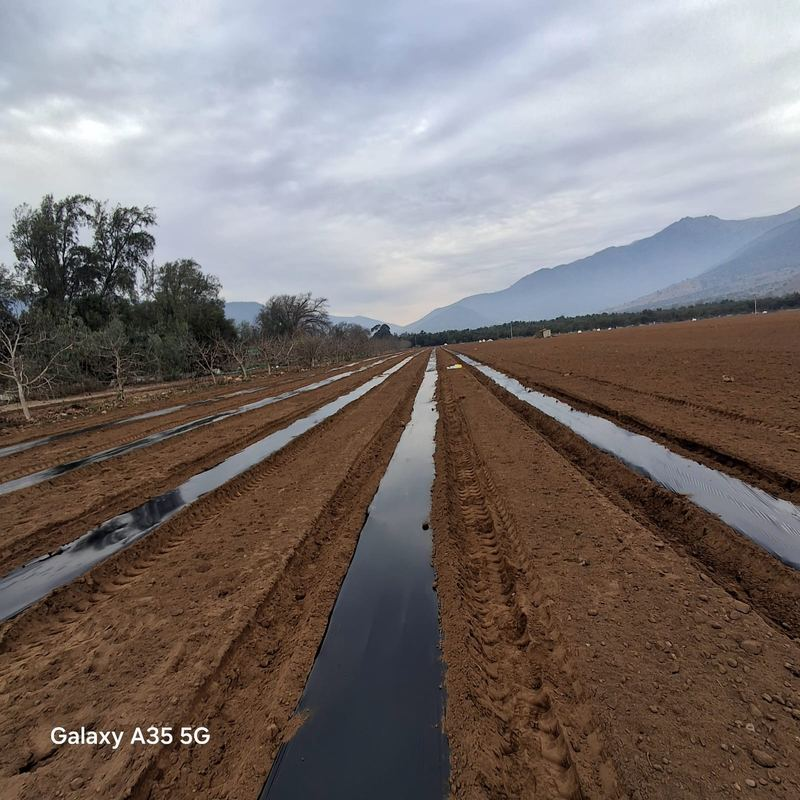
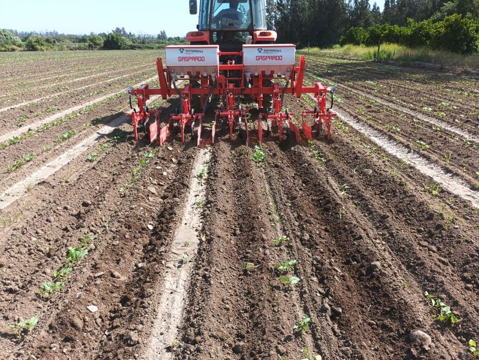
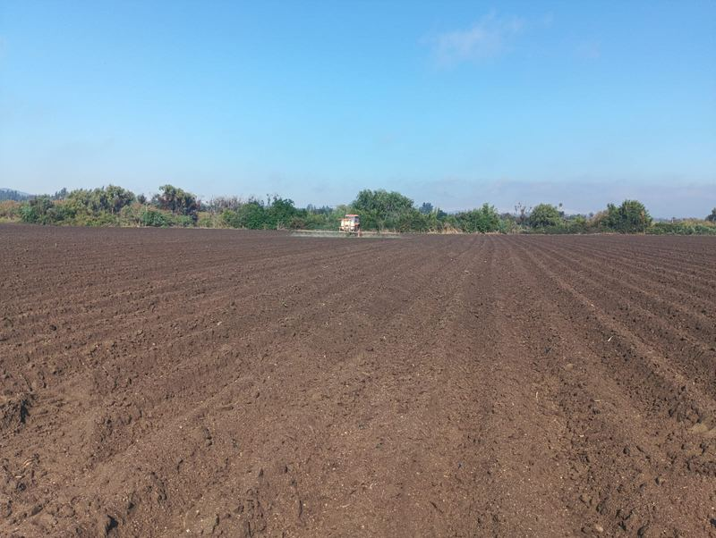
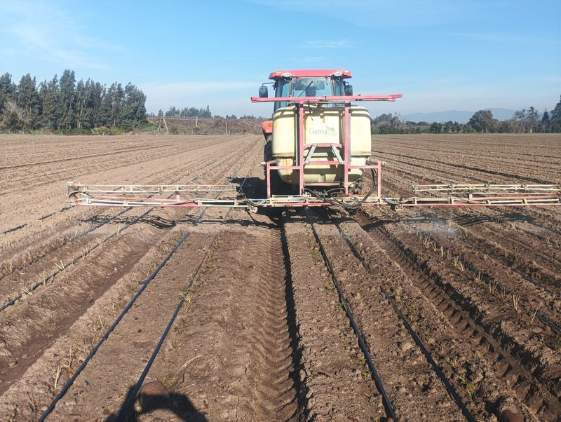
Imágenes referenciales.
Videos en terreno
Mira a MeliTerra trabajando: arado, movimiento de tierra, caminos y riego en Melipilla.